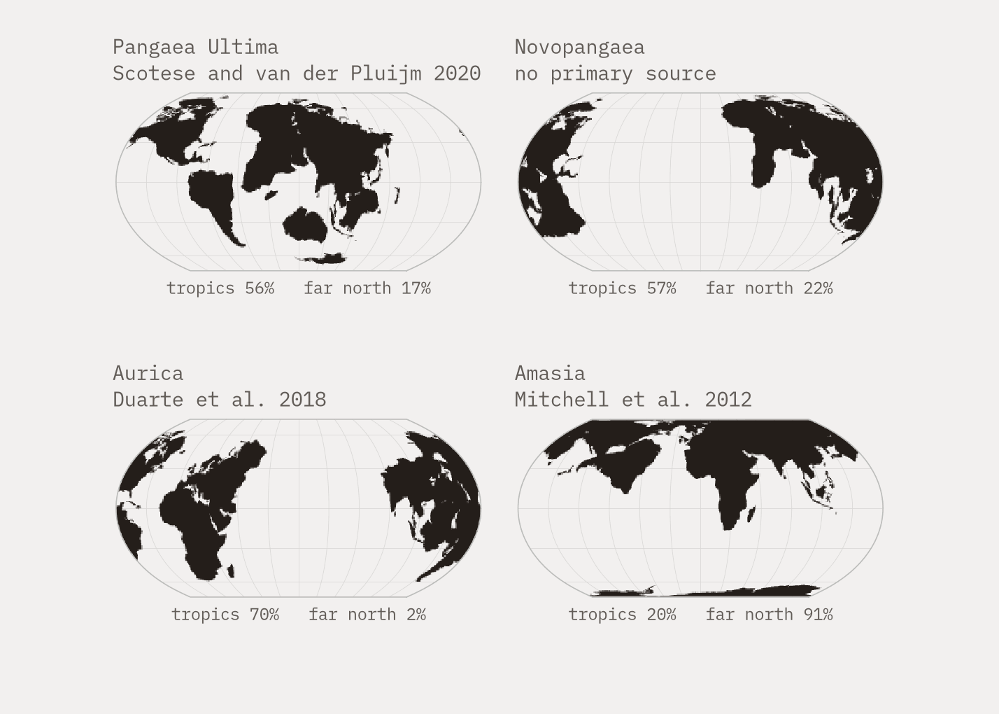

<!doctype html><meta charset="utf-8"><title>imgdims fixture</title>
<!-- The two faults sync_img_dims.py's <source> checks exist to catch, one per
     block, against real files so the sizes are measured rather than asserted.

     This page is never in site/: a control page that shipped would be a
     published page nobody meant to publish.

     The paths climb out to site/assets/ on purpose. real_size() resolves a ref
     against the page's own directory, so a fixture that carried its own PNG
     would be measuring a file nothing else on the site uses, and the day the
     real figure changed shape the fixture would keep passing. -->

<!-- 1. dims. The phone render is 700x1750. This <source> claims 1428x1020,
        which is the DESKTOP file's shape - the exact substitution that put a
        621.4px shift (Chromium) and 622.0px (Firefox) on continents.html. -->
<picture>
<source media="(max-width:760px)" srcset="../../site/assets/continents_fig1_futures-phone.png" width="1428" height="1020">

</picture>

<!-- 2. descriptor. A comma list with w descriptors. sync_assets.py --apply
        reported both files as orphans and removed them ("copied 0, removed 3")
        and bust_cache.py stamped 0 pages against this shape. It must be
        refused, not resolved. -->
<picture>
<source srcset="../../site/assets/continents_fig1_futures-phone.png 350w, ../../site/assets/continents_fig1_futures.png 714w" sizes="(max-width:760px) 350px, 714px">

</picture>
